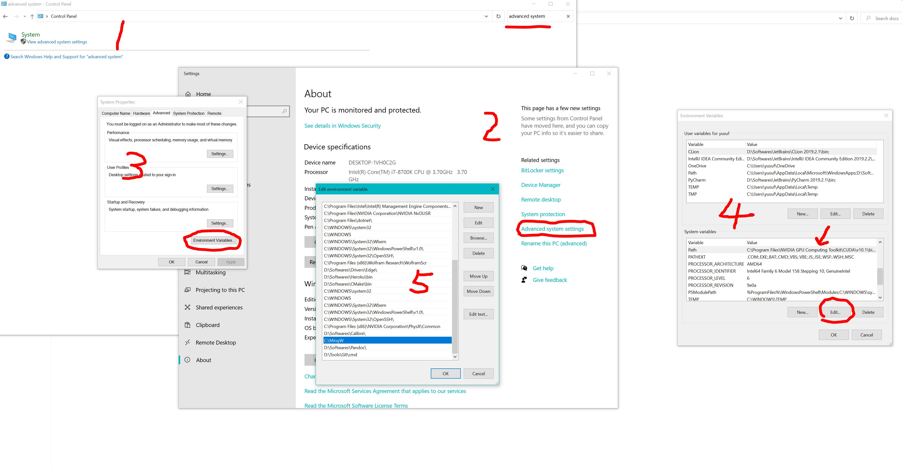

3. Download and installation
3.1. Requirements
A Fortran compiler — GNU
gfortran(version 9 or newer) or Intelifort/ifx. FOCEX and ANFOMOD need nothing else.An MPI implementation (
mpif90) — only for THERMACOND (make thermacond-serialbuilds it without MPI) and SCOP8.make.Optional, for plotting the results:
gnuplot.
No external numerical library is required: the LAPACK routine used for the
diagonalisation (zhegv) is bundled with the source.
3.2. Getting the code
The source is on GitHub: https://github.com/KeivanS/Anharmonic-lattice-dynamics
(in a browser: Code → Download ZIP). From a terminal, clone the repository once (this also
brings SC-SNAPS, in SC_SNAPS/):
# on a cluster first: module load gcc openmpi python (module spider gcc lists the versions)
git clone https://github.com/KeivanS/Anharmonic-lattice-dynamics.git
cd Anharmonic-lattice-dynamics
./configure --install # all the settings (next section); ends with "Ready"
make # = make all
To update it later, from inside that folder:
git pull
./configure --install # again: a pull may change what the Makefiles need
make # rebuild
If you have edited files of your own, git pull keeps them; it stops, changing nothing, when the
update touches a file you edited. Then git stash, git pull, git stash pop puts your
edits aside, updates, and puts them back.
3.3. Configuring: configure
One command, once after cloning, and again after every git pull and after installing or moving
compilers, MPI, VASP or Python. Running it again is always safe.
./configure --install # find, test, write all the settings, check them in a new login shell
./configure --install --build # the same, then make
./configure # look and write the files, but leave the start-up file alone
On a cluster, load a compiler, its MPI and its Python first, in that terminal only
(module load gcc openmpi python; module spider <name> lists the versions), and add
--account <SLURM account>. Do not put module load lines into ~/.bashrc yourself:
configure writes the right ones into ~/.aladyn.env.
It looks at the computer (operating system, cores, memory, SLURM, environment modules), finds the
Fortran compiler (gfortran, else ifx or ifort) and the MPI wrapper (mpif90, and the
compiler it calls), compiles and runs a small OpenMP program on two threads and an MPI program on two
ranks (on a cluster login node it only compiles), and checks the FOCEX agent’s needs (Python, VASP-Flow,
POTCARs, VASP, gnuplot; --no-agent skips them). It writes (the previous version of each is kept as
.bak):
make.local:DESTDIR, the Fortran compilerFF(FOCEX, FOCEX/utility, ANFOMOD, SC-SNAPS), the MPI wrapperMPIFC(THERMACOND),FLAGS,PYTHON(the Python with numpy, spglib, pymatgen), and on macOS with Homebrew’s Open MPIOMPI_FCandSDKROOT.make.inc(in git: the defaults) reads it at its end, so its values win; it is not in git, sogit pullnever conflicts with it. The top-levelmakepasses these to every part.~/.aladyn.env: on a cluster themodule loadline (the modules loaded whenconfigureran, and those it loaded itself: the module of~/myenv’s Python, found from~/myenv/pyvenv.cfg, and gnuplot if its module has thepdfcairoterminal the plots use),PATHwithDESTDIR,OMPI_FCandSDKROOT(macOS),FOCEX_PROFILE(cluster), and it reads~/.focex-agent.env(Setting up the FOCEX agent: focex-configure.sh).with
--install: one line at the end of~/.bashrc(Linux),~/.bash_profile(macOS with bash) or~/.zshrcthat reads~/.aladyn.env, never twice (a separate older line for~/.focex-agent.envis removed); then the launchers ofmake python-toolsand a check in a fresh login shell:focex-agent --versionandpython3with numpy, spglib, pymatgen.
Options: --prefix DIR (DESTDIR), --fc, --mpifc (the compilers to use), --account,
--vasp-module, --profile-name (cluster), and the agent’s --potcar, --vasp, --python.
On a cluster it also drafts the VASP-Flow profile of the FOCEX agent,
~/VASP-Flow/profiles/<cluster name>.json (--profile-name for another name), and makes it the
default (FOCEX_PROFILE): the default partition and its cores per node (sinfo), 1 node, 12 hours,
the modules above, the account (--account; else that of the profile drafted before; else your
SLURM default account; with several a warning lists them) and the newest vasp/<version> module
(--vasp-module for another), tested: it must give a vasp_std whose libraries are all found.
When that module unloads the Python modules (on some clusters it loads the Intel compiler, which swaps
out gcc), VASP is started as ~/ALADYN/bin/vasp-env srun vasp_std: vasp-env, written by
configure, loads the VASP module for the VASP command only, and the job keeps the others. A profile
drafted by configure is drafted again on a rerun; one you wrote yourself is never changed. It also
writes two THERMACOND job scripts, MPI and OpenMP, with these values and the modules filled in, to
~/ALADYN/jobs (Running THERMACOND).
3.4. Building everything at once
One make in the top folder builds every part and installs the executables in
DESTDIR, set in the top-level make.inc:
DESTDIR = ~/ALADYN/bin
# ANFOMOD, FOCEX
FF = gfortran
# SCOP8, THERMACOND
FC = mpif90
F90 = mpif90
FLAGS = -O2 -fcheck=all -ffree-line-length-0
Edit it if you want a different installation directory (or give make DESTDIR=...);
FOCEX and THERMACOND set their own compiler options in their Makefiles. Then
make # = make all: everything below except SCOP8
make focex # FOCEX (focex-9.9.x) and its utilities (read_outcar.x, ...)
make sc_snaps # SC-SNAPS (sc_snaps.x, poscar2xyz.py)
make thermacond # THERMACOND with MPI (tcond-2.2.x); thermacond-serial: without
make anfomod # ANFOMOD
make python-tools # launchers focex-agent, focex-diagnose, allplots, kappaplots, shell-optimizer, aladyn-gui; bandplot
make scop8 # SCOP8, not part of "make": it does not compile at present
make clean # removes the object and module files
On macOS with Homebrew’s Open MPI, configure puts OMPI_FC and SDKROOT into make.local
(without it: export OMPI_FC=/opt/homebrew/bin/gfortran and export SDKROOT=$(xcrun --show-sdk-path)
before make; see Running THERMACOND).
The sections below describe each part and how to build it on its own.
./configure --install puts the installation directory into PATH (through ~/.aladyn.env).
Without configure, put this line in your ~/.bashrc or ~/.zshrc so that it is set in every
session:
export PATH=${PATH}:~/ALADYN/bin
FOCEX
cd FOCEX
make # -> ~/ALADYN/bin/focex-9.9.x
This compiles the sources listed in FOCEX/Makefile and produces a single
executable. Two details of that Makefile are worth knowing:
the name of the executable is
focex-<ver>.x, with the version numberverset near the top (currently 9.9; 8.18 and earlier were installed as~/BIN/v<ver>), andit is moved to
DESTDIR,~/ALADYN/binby default (make DESTDIR=...for another place; the top-levelmakepasses theDESTDIRofmake.inc).
FOCEX/Makefile also has its own FF and FLAGS variables. Since 2026-11-04 the
default is -O3 -fopenmp: the SVDs of the fit run on OpenMP threads. make DEBUG=1
gives the earlier -O2 -fcheck=all build with array-bound checks (slower; for finding
bugs). Run make clean when switching between the two. Both give the same force
constants and frequencies.
Threads (FOCEX and THERMACOND): the program chooses the number itself and writes it in the
log and in times.dat. It does not use OMP_NUM_THREADS.
FOCEX_NUM_THREADS(TCOND_NUM_THREADS) if set;1 when started by
mpirunwith more than one process;SLURM_CPUS_PER_TASKin a Slurm job (#SBATCH --cpus-per-task=N);otherwise all cores but about 20 %, so that the machine stays usable (8 of 10).
The utility programs
The tools that prepare the input of FOCEX and post-process DFT output are built separately:
mkdir -p ~/ALADYN/bin # or whatever DESTDIR you set in make.inc
cd FOCEX/utility
make
This produces four executables and moves them to DESTDIR:
Executable |
Purpose |
|---|---|
|
Extracts positions, forces and energy from a VASP |
|
The same for a Quantum Espresso (PWSCF) output file, whose name is read
from standard input: |
|
Converts a POSCAR to |
|
POSCAR to |
poscar2focex.x POSCAR (options -o, -p, -k for the three output names,
-s symprec in Angstrom, default 1e-3, -f to overwrite) finds the symmetry of the
crystal itself, with no external library: Niggli reduction, the operations of the
lattice, those of the crystal (with their fractional translations), the crystal system and
the Bravais lattice. The cell and the band-structure path follow Setyawan and Curtarolo,
Comput. Mater. Sci. 49, 299 (2010), the convention of pymatgen’s KPathSetyawanCurtarolo
and of VASP-Flow’s k-path:
structure.params: line 1 a b c alpha beta gamma of the conventional cell, line 2 the primitive vectors in conventional units, line 31.0 0, the atoms in conventional units; masses and names from the POSCAR, the other lines the defaults ofFOCEX/example/Ge, markeddefault, check;POSCAR_focex: the primitive cell in the frame FOCEX builds from line 1 (a along x, b in the xy plane); build the supercells from it;kpbs.params: the Setyawan-Curtarolo path for the lattice and its sub-case (FCC, BCT1, ORCF2, RHL1, MCLC3, TRI1a, …), in primitive reduced coordinates.
The output does not depend on how the input cell is written: any primitive basis,
orientation or origin gives the same files. For a crystal of lower symmetry than its
lattice (pyrite, wurtzite) the setting of the atoms is fixed by a canonical rule, and a
chiral crystal is never mirrored. Checked against pymatgen on 26 structures covering all
Setyawan-Curtarolo lattices and 24 of their 26 sub-cases (MCLC2 and MCLC4 are exact
equalities between the lattice parameters), and on 78 randomly rewritten inputs; the test
scripts and the results are in FOCEX/utility/tests/poscar2focex.
FOCEX/utility/poscar2focex.py (Python, numpy and spglib) is the earlier version; it is
kept because focex-agent.py uses its functions.
Note
The snapshot generator sc_snaps.x is built from the SC_SNAPS folder, not here:
make sc_snaps in the top folder (or the top-level make) installs it in
~/ALADYN/bin; see Running SC-SNAPS. The folder is identical to the separate
repository github.com/KeivanS/SC_SNAPS.
SCOP8
On Linux
Adjust the
FLAGSoption inSCOP8/Makefileif you need different compiler flags:FLAGS= #-O3 #-C # to check everything O3 #g -p #for profiling with gprof
Run
makeinSCOP8; this creates the binarymain.x.
On Windows
Put the MinGW package under the root folder, download here. The newest version of MinGW may not work properly.
Open Control Panel > System advanced settings and add the path of
root:\MingW, see below:
Install the IDE code::blocks, download here.
Set up the environment in code::blocks: menu > settings > compiler, set GNU Fortran as default and auto-detect compilers (you may need to uncheck all the optional compiling options).
Load the project in code::blocks by double clicking test.cbp.
Compile and run the code by pressing F9.

THERMACOND
Run
makein theTHERMACONDdirectory. THERMACOND needs agfortrancompiler and MPI (make serial: no MPI). The binary is named after the version,tcond-2.2.x(serial:tcond-2.2-serial.x), and installed in~/ALADYN/bin. It takes no input from the terminal:tcond-2.2.x, ormpirun -np N tcond-2.2.x(Running THERMACOND).
3.5. Setting up the FOCEX agent: focex-configure.sh
The FOCEX agent (FOCEX agent: user’s guide) also runs the DFT calculations, so it has to know where
VASP, MPI, the POTCAR library, VASP-Flow and a suitable Python are. configure (above) runs this
script and reads its file from ~/.aladyn.env (use configure: it also loads the modules the
script’s findings need); on its own:
cd FOCEX/AGENT
bash focex-configure.sh # look and report only; writes ~/.focex-agent.env
bash focex-configure.sh --install # the same, and adds one line to your shell start-up file
# that reads ~/.focex-agent.env in every terminal and job
It looks at, in this order: the computer (operating system, processor, cores, Slurm), the compilers
(gfortran, mpif90; needed only to build FOCEX and SC-SNAPS), the FOCEX, SC-SNAPS and
read_outcar.x binaries, Python with numpy, spglib and pymatgen, VASP-Flow, the POTCAR library,
vasp_std (one whose libraries are missing, ldd ... not found, is rejected), MPI and gnuplot.
It then writes the settings to ~/.focex-agent.env (VASP_POTCAR_DIR, VASP_STD, MPI_LAUNCH,
VASP_FLOW_DIR, ~/ALADYN/bin and the Python environment’s bin at the front of PATH) and checks
them by building a POTCAR with VASP-Flow’s own functions and by starting focex-agent.py
--version. It ends with Ready and the number of warnings. When the search finds the wrong
program or nothing, tell it where to look:
--potcar DIR the POTCAR library (PBE): the folder with Si/, O/, Zn/, ... each holding a POTCAR
--vasp FILE the vasp_std executable
--python FILE the Python interpreter of the environment with numpy, spglib, pymatgen
--env FILE where to write the settings (default ~/.focex-agent.env)
Run it again after installing or moving any of these programs. FOCEX alone (without the agent)
needs none of this: make and the PATH line above are enough. The step-by-step installation
of the agent is in its manual, FOCEX/AGENT/focexagent_manual.pdf.
3.6. Checking the installation
The quickest end-to-end test is the germanium example shipped with FOCEX; see Quick start: the Ge example. It exercises the symmetry analysis, the SVD fit and the whole phonon/thermodynamics post-processing, and finishes in a few minutes on a single core.